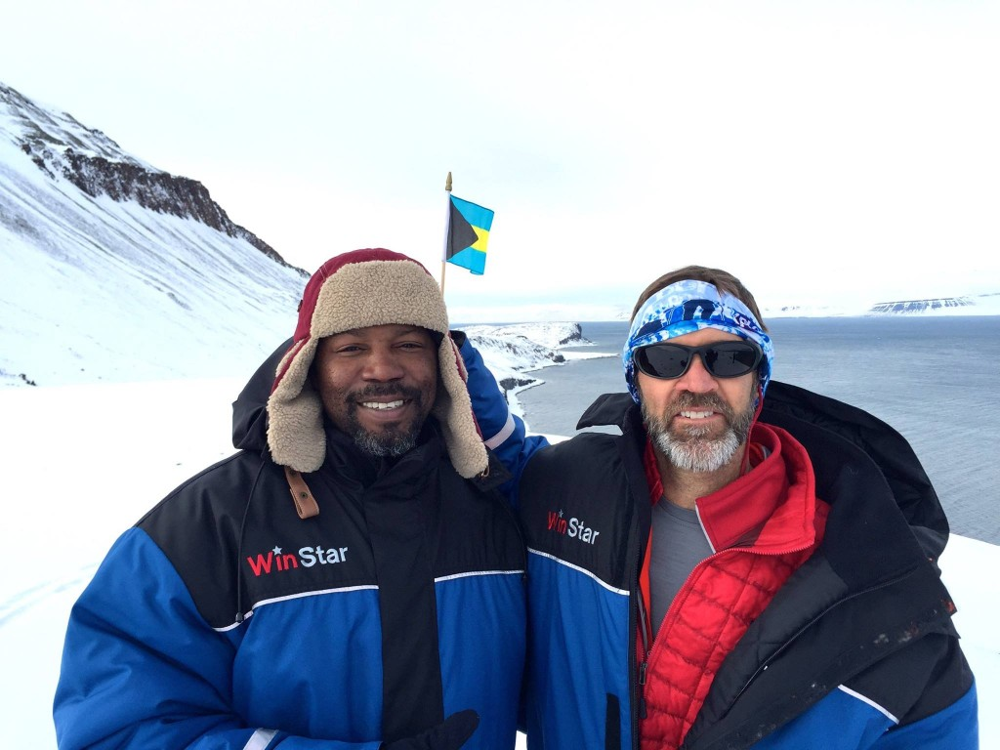

The Challenge
James and Anita have two goals in mind: succeeding in their quest to the North Pole and collect £30,000 for the charities they support. They will bring the new Microsoft Band 2 with them so you can follow their performance during this time. Help them to help others.
DonateThe Charities
Help James and Anita in their goal to collect £30,000 for these three charities.

Diana Award
Founded in 1999, the organisation believes young people have the power to change the world for the better. Awards are presented to individuals who make a positive difference in their community and currently there are around 42,000 award holders around the UK.
Donate
Donate
Royal Signals Benevolent Fund
The Royal Signals is the Corps I joined when I enlisted in the Army. The Benevolent Fund’s mission is to provide aid to the families of both former and serving Signallers. Founded in the 1980’s, the charity has helped make life a little easier for thousands of Signallers and there families at the lowest points in their lives.
Donate
Donate
Walking with the Wounded
Founded in 2013, the charity is the brainchild of a couple of ex-Forces personnel. The principle aim of the Ed and his team is to raise money for wounded servicemen, and women, in order to fund rehabilitation and vocational programmes. WwtW also works directly with Recovery Career Service, Back to Work and LifeWork in as part of the overall service they offer.
Donate
Donate